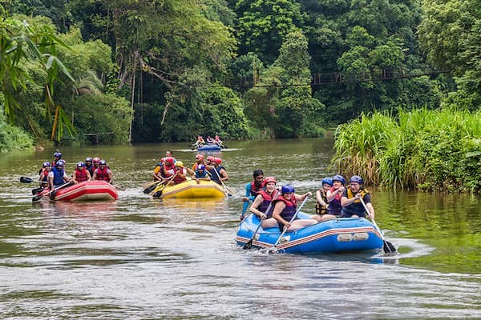
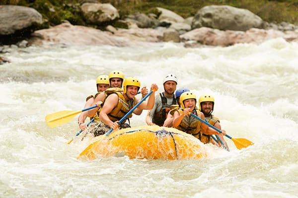

White Water Rafting Excursions and Trips

The Vaal River Trip is a five day excursion starting at bottom of the Bloemhof dam wall and finishing up at the Vaalharts dam. The beauty of this trip is the many white water sections that will be encountered along the five day excursion. This trip will be better suited to those who have experience in White Water Rafting.

The Duzi River Trip is a day trip aimed for beginner rafters. This trip will take you through a very scenic route, but stays very near to modern ammenities. This is the perfect trip if you are interested in getting to know river rafting.

The Orange River Trip is our premium trip, taking place over a full week. This trip begins at the bottom of the Gariep dam wall and ends at the majestic Augrabies Falls. This trip is for the intermediate Rafter, you will enjoy the rapids as well as times of tranquility along the way. All the camp sites are set up by our support staff for this trip.
Available Excursions
| Trip | Duration | Recommended Experience | Trip Availability |
|---|---|---|---|
| Vaal River Trip | 5 Days | Experienced Rafter | February / November |
| Duzi River Trip | 1 Day | No Experience Needed | March / September |
| Oranje River Trip | 5 Days | Imtermediate Rafter | January / October |
| Tugela River Trip | 4 Days | Imtermediate Rafter | April / December |